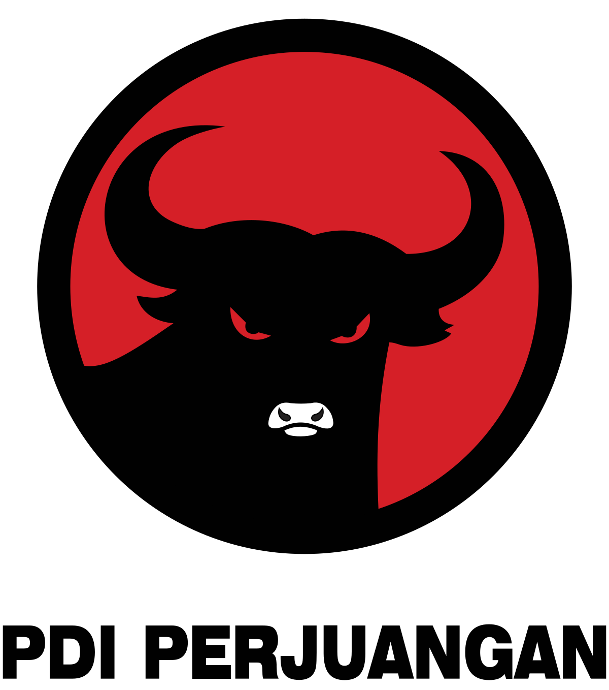

Bandung, 11 Agustus 2025 Universitas Teknologi Digital (UTD) mendapat kehormatan menerima kunjungan kerja Anggota DPR-RI Komisi X Fraksi PDI Perjuangan. Kunjungan ini menjadi momentum penting dalam mempererat hubungan antara dunia pendidikan tinggi dan pemerintah, khususnya dalam mewujudkan pendidikan berkualitas dan merata di seluruh Indonesia.
Dalam pertemuan yang berlangsung hangat, dibahas berbagai hal strategis, mulai dari peningkatan mutu pendidikan, penguatan infrastruktur pembelajaran, hingga dukungan terhadap program Kartu Indonesia Pintar (KIP). Program KIP dipandang sebagai salah satu langkah nyata pemerintah dalam memastikan setiap anak bangsa, khususnya dari keluarga kurang mampu, dapat mengenyam pendidikan tinggi tanpa terbebani kendala biaya.
“Kami berkomitmen untuk memastikan pendidikan tinggi dapat diakses oleh semua lapisan masyarakat. Program KIP adalah bukti nyata kehadiran negara dalam memberikan kesempatan yang setara bagi seluruh anak bangsa untuk menggapai cita-cita,” ujar Bapak Denny Cagur, S.Pd.
Rektor Universitas Teknologi Digital, Dr. Supriyadi, S.E., M.Si, menyampaikan apresiasi yang tinggi atas dukungan yang diberikan DPR-RI melalui Komisi X. “Kunjungan ini memberikan motivasi dan semangat baru bagi kami untuk terus berinovasi, memperluas akses pendidikan, dan mencetak lulusan yang tidak hanya unggul secara akademis, tetapi juga memiliki karakter dan kompetensi yang dibutuhkan di era global,” ungkapnya.
Universitas Teknologi Digital berharap, melalui kolaborasi yang erat dengan pemerintah dan berbagai pemangku kepentingan, visi mencetak generasi unggul, berkarakter, dan siap menghadapi tantangan masa depan dapat terwujud secara nyata.